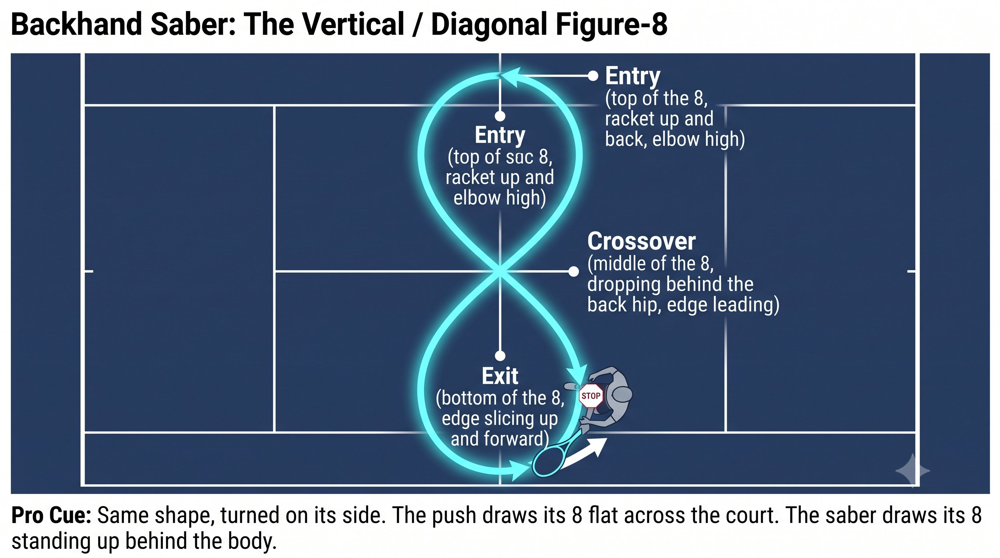
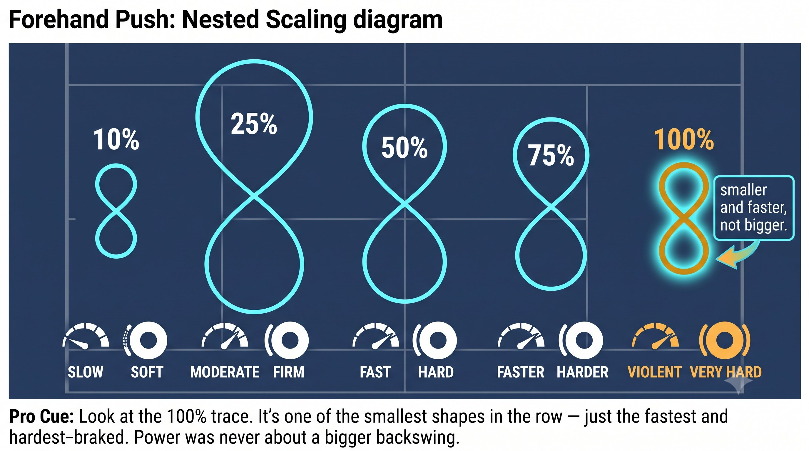
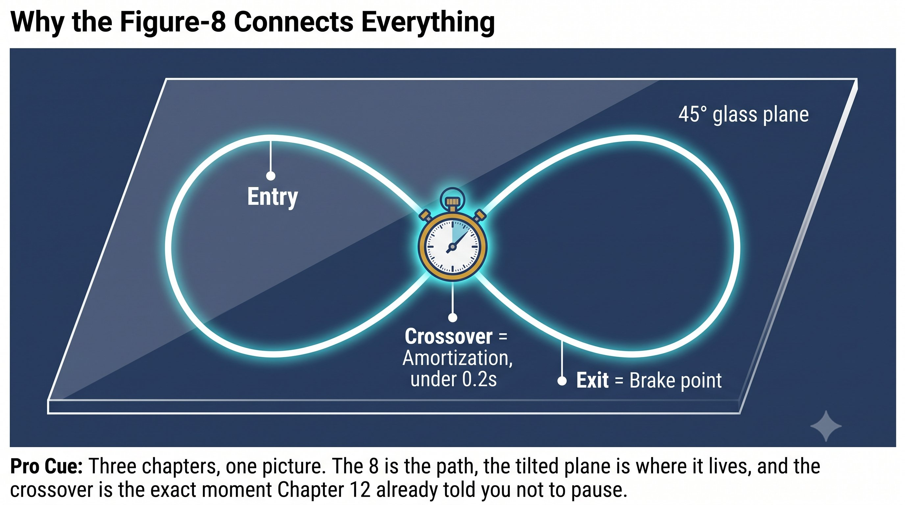

Chapter 13: Figure-8 Regulation
(English version of Chapter 13 in the United Tennis Handbook)
CHAPTER 13

Figure 1
FIGURE-8 REGULATION
The Power Regulator (8)
How you hit soft, medium, and hard without ever changing your mechanics. Same loop, same SSC, same braking — the only thing that changes is the size of the 8.
It's not a shape you draw. It's the path your hand and racket center of mass trace when you connect the takeback to the forward swing continuously.
— Henry Pham
What the Figure-8 Actually Is
Stop at the end of the takeback and you have two separate moves instead of one — and that kills the SSC. The figure-8 is what guarantees there's no pause to begin with.

Figure 2
The Principle
The figure-8 guarantees no pause. A straight back-and-forth path has slack at the point of reversal, and that slack loses energy. An 8 has no slack — it's continuous tension the whole way through.

Figure 3
Figure 13.1: The push forehand traces a horizontal 8 from directly above. Entry goes back and out, crossover drops inside, exit pushes through. The front-leg brake happens at the exit — that's where the impulse lives.

Figure 4
Forehand Push: The Horizontal Figure-8
Picture this from directly above:
1. Entry: the racket goes back and slightly out, the chest opens, and the spiral line stretches. This is the first half of the 8.
2. Crossover: the racket drops inside, close to the body, with the butt cap pointing at the ball. This inside drop is the middle of the 8, where direction changes — and this is the amortization phase. It has to be fast and smooth.
3. Exit: from inside, you push forward through the ball — the second half of the 8. Then the front leg brakes and delivers the one-inch pulse.
The Principle
Keep the 8 horizontal. Make it vertical instead — a big low-to-high loop — and you lose the forward push, ending up with loopy topspin and nothing else. A horizontal 8 gives you drive plus topspin together. The push feeling lives in the horizontal plane.
Power Regulation: Same 8, Different Size and Speed
You never change your swing for power. You change the size and speed of the 8.
The Principle
You don't change the swing for power. You change the size and speed of the 8. Same loop, same SSC, same braking — only the size and speed differ. Tensegrity stays loaded and the SSC stays intact.
Backhand Saber: The Vertical / Diagonal Figure-8
Now picture this from the side:
1. Entry: the racket goes up and back, elbow high, and the back line stretches. This is the top of the 8.
2. Crossover: the racket drops down behind you, edge leading — the middle of the 8, near the back hip. This drop has to come from gravity, never muscle, and this is the amortization phase. It has to be fast and smooth.
3. Exit: the edge slices up and forward through the ball — the bottom of the 8 on the way out. The chest brakes and stays side-on.
The Principle
The saber 8 runs vertical or diagonal. A small 8 gives you slice or chip. A medium 8 gives you a topspin rally. A compact, violent 8 attacks a high ball.
Figure 13.2: The saber backhand traces a vertical 8 from the side. Entry is the top of the 8 — racket up and back, elbow high. Crossover is the middle — dropping behind the back hip, edge leading. Exit is the bottom — edge slicing up and through. Chest brake stays side-on at the exit.

Figure 5
Power Regulation: Same Saber 8, Different Size and Speed
Figure 13.3: Look at the 100% trace. It's one of the smallest shapes in the row — just the fastest and hardest-braked. Power was never about a bigger backswing.
Why the Figure-8 Connects Everything Built So Far
Figure 13.4: Three chapters, one picture. The 8 is the path, the tilted plane is where it lives, and the crossover is the exact moment Chapter 12 already told you not to pause.
Drills to Find Your 8
1. Shadow 8s, no ball: run 20 continuous figure-8s with the hand alone, racket butt leading. No pause anywhere in the path. Feel the connection from the inside arch through the obliques to the palm stay alive the whole time.
2. Add the front-leg brake: 8-8-brake-pulse, then 8-8-8-brake-pulse. Feel the front leg stop hard at the exit of each 8.
3. Power regulation: a partner calls out "20%, 50%, 100%." You keep the exact same 8 path and only change its size and speed. 20% is a tiny, slow 8. 100% is a tiny, fast 8 with a hard brake. Pull the racket way back for the 100% and you've already lost it — a big takeback isn't power, it's just a slow 8.
4. The regulation drill, fed: a partner calls out "20%, 50%, 100%" as they feed balls. You keep the same figure-8 path, only changing size and speed. If you catch yourself pulling the racket way back for the 100% ball, you've lost it — a big takeback isn't power, it's a slow 8.
The Rule
A small 8 with a hard brake produces more impact than a big 8 with a soft brake. Bruce Lee's one-inch punch is exactly this: a small 8, a violent brake, and a massive impulse.
Figure 13.5: This isn't an illustrator's idea of a figure-8. This is what a real racket actually draws in the air when the swing has no pause in it.
The Figure-8 Checklist
HEAD STILL. EYES PARKED. SMALL 8. HARD BRAKE. ONE-INCH PULSE.
– Find your horizontal 8 (push) and your vertical 8 (saber) — 20 shadow reps each.
– The crossover of the 8 has to be fast and smooth — no pause means amortization under 0.2 seconds.
– Power comes from changing the size and speed of the 8, never from changing the swing mechanics.
– 20% is a tiny, slow 8. 50% is a medium 8. 100% is a tiny, fast 8 with a hard brake.
– Pull the racket way back for power and you've made a slow, big 8 — and lost the whole point.
– A horizontal 8 on the 45-degree glass plane is the push. A vertical 8 on the same plane is the saber.
– The crossover of the 8 is the amortization phase — keep it smooth and under 0.2 seconds to keep the elastic energy.
Where This Leads
This chapter establishes 8 — figure-8 regulation — as the variable in Q-V-ROOT-8-45-Impulse-Jin CORE. Chapter 14 covers the 45-degree swing plane as the sweet spot. Chapter 15 covers braking and impulse as the one-inch pulse, or fa jin. Chapter 16 covers jin as the three manifestations that result.